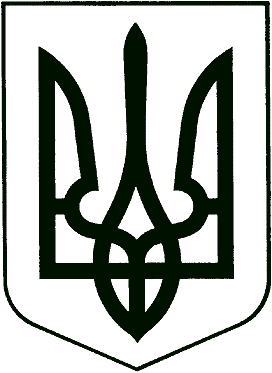
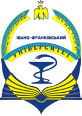
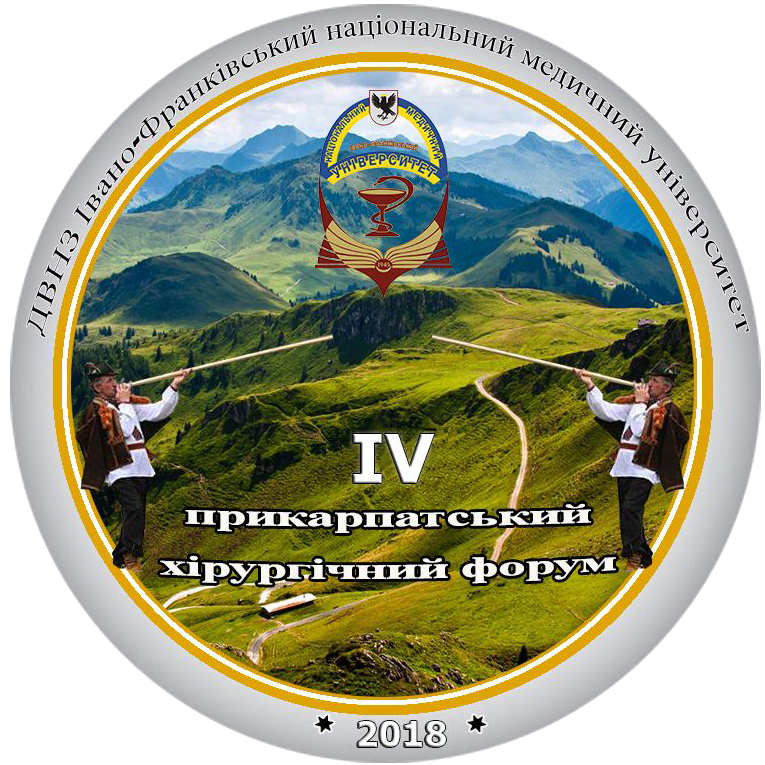

УКРАЇНА
МІНІСТЕРСТВО ОХОРОНИ ЗДОРОВ’Я УКРАЇНИ
ДВНЗ «ІВАНО-ФРАНКІВСЬКИЙ НАЦІОНАЛЬНИЙ МЕДИЧНИЙ УНІВЕРСИТЕТ»
ПрАТ ЛІКУВАЛЬНО-ОЗДОРОВЧИХ ЗАКЛАДІВ ПРОФСПІЛОК УКРАЇНИ «УКРПРОФОЗДОРОВНИЦЯ»
ДП «САНАТОРНО-КУРОРТНИЙ КОМПЛЕКС «МОРШИНКУРОРТ»
УКРАЇНСЬКЕ ТОВАРИСТВО ФІЗИЧНОЇ ТА РЕАБІЛІТАЦІЙНОЇ МЕДИЦИНИ
ГО «ПРИКАРПАТСЬКЕ ТОВАРИСТВО ТЕРАПЕВТІВ»
Інформаційний лист № 1 (переглянути)
Вельмишановні колеги!
Запрошуємо Вас взяти участь у Науково-практичній конференції «Медична реабілітація у санаторно-курортних закладах України. Нові технології реабілітації хворих на курортах Європи. Сучасні вимоги в організації СПА комплексів на курортах та досвід використання СПА процедур у медичній реабілітації. Присвячена 140-річчю курорту Моршин».
Конференція включена до «Реєстру конгресів, з'їздів, симпозіумів, науково-практичних конференцій, які проводитимуться у 2018 р.» відповідно до «Інструкції з підготовки та проведення з'їздів, конгресів, симпозіумів та науково-практичних конференцій», затвердженої наказом МОЗ та НАМН України від 23.06.2017 № 699/41.
Конференція відбудеться: 27-28 вересня 2018 року в м. Моршин. Початок конференції 27 вересня 2018 р. о 10:00 у приміщенні «Палацу культури», м. Моршин, вул. Івана Франка 52, центральний актовий зал.
Організатори конференції:
ДВНЗ «Івано-Франківський національний медичний університет Дочірнє підприємство «Санаторно-курортний комплекс «Моршинкурорт»
Співорганізатори:
ПрАТ Лікувально-оздоровчих закладів профспілок України «Укрпрофоздоровниця» Українське товариство фізичної та реабілітаційної медицини ГО «Прикарпатське товариство терапевтів»
На конференції планується обговорення наступних питань:
- Історія розвитку санаторно-курортної справи.
- Ознайомлення з досвідом санаторно-курортного лікування в країнах Європи.
- Світовий досвід підготовки персоналу для роботи в сфері медичної реабілітації.
- Сучасний підхід до навчання персоналу та стан впровадження новітніх навчальних програм в Україні.
- Шляхи впровадження сучасних стандартів медичної реабілітації по різних медичних профілях в Україні.
- Роль медичної реабілітації та санаторно-курортного лікування в збереженні здоров’я населення України.
- Питання співпраці лікарів по різних профілях з Фондом соціального страхування України з питань отримання застрахованими особами реабілітаційного лікування в санаторно-курортних закладах України.
- Сучасні проблеми експлуатації, охорони та використання природних лікувальних ресурсів в санаторно-курортному (реабілітаційному)лікуванні.
- Удосконалення організації харчування в санаторно-курортних закладах.
- Досвід медико-психологічної реабілітації воїнів АТО на базі санаторно- курортних закладів України.
- Ознайомлення з сучасним обладнанням яке використовується у санаторно-курортному лікування та медичній реабілітації.
Робочі мови конференції:українська, англійська.
Первинна реєстрація.
Для участі у конференції необхідно заповнити:
Анкета учасника конференції
- прізвища, ім'я, по-батькові
- місце роботи, посада/наукова ступінь
- форма участі у конференції
- назви доповіді та вказівка на основного доповідача
- контактні дані.
Форми участі у конференції:
- публікація статей та усна доповідь (статті будуть опубліковані у фаховому часописі «Art of medicine»)
- публікація тез та усна доповідь (тези будуть опубліковані у збірнику тез конференції)
- тільки усна доповідь
- тільки публікація статей / тез
- слухач
Анкету необхідно подати до 10.05.2018 р. на електронну адресу medreab2018@gmail.com
Вимоги до оформлення тез доповідей:
- тези написані українською та англійською мовами;
- набір тексту тез виконується у редакторі Microsoft Word;
- шрифт — Times New Roman; розмір кегля — 12;
- міжстроковий інтервал — 1,0;
- абзац – 1,25 см;
- поля верхнього, нижнього і лівого та правого — 2,0 см;
- у тексті тез посилання на використані літературні джерела слід зазначати порядковим номером, виділеним двома квадратними дужками, згідно з переліком джерел (позиція цитованого видання у списку літератури) [1]. Список використаної літератури наводиться в кінці тез в порядку появи відповідних посилань (не більше 3-х);
- на початку тез обов’язково вказувати прізвище та ініціали автора, установа, місто, країна, назву роботи;
- рекомендований обсяг тез - 1 сторінка А4.
Тези просимо надіслати до 10.05.2018 р. на електронну адресу medreab2018@gmail.com
Вартість публікації тез доповідей для учасників з України складає 100 грн., для учасників з інших країн – гривневий еквівалент 5 доларів США (згідно з курсом НБУ на дату проведення оплати).
Оплату за публікацію тез необхідно здійснити на рахунок:
ГО «Прикарпатське товариство терапевтів»
Код ЄДРПОУ 40677127
р/р 26001052530090
в ПАТ КБ «Приватбанк» в м. Івано-Франківську, МФО 336677
з поміткою: на конференцію «Медична реабілітація».
Тези доповідей, оформлені без дотримання вимог та надіслані після вказаного граничного терміну, публікуватись не будуть.
Вимоги до оформлення статей в журналі «Art of medicine»:
Редакція журналу «Art of medicine» бере до розгляду для публікації статті за умови, що ні рукопис, ні будь-яка його частина, таблиці, рисунки не були опубліковані раніше в друкованій чи електронній формі і не перебувають на розгляді для публікації у іншому журналі. Автор зобов’язаний ретельно вичитати і відредагувати текст рукопису. Зміст викладати чітко, без повторень, користуватися українським правописом, вживати українську термінологію і дотримуватися норм літературної української мови. Одиниці виміру вказувати за системою CI.
Рукопис необхідно оформити за допомогою MS Office на стандартному аркуші формату А4 (210х297 мм), шрифт – “Times New Roman”, розмір шрифту – 14, інтервал – 1,5, абзацний відступ - 1,25 мм, вирівнювання - по ширині. Поля документа - 20 мм (з усіх сторін), обсяг - від 10 до 25 сторінок
Структура статті:
- Шифр УДК
- Назва статті (великими літерами, жирним шрифтом, вирівнювання по середині, одинарний міжрядковий інтервал).
- Прізвище, ініціали автора (авторів) мовою статті (кількість авторів однієї статті не повинна перевищувати п’яти осіб!)
- Установа (повна назва, кафедра, місто, країна, e-mail)
- Резюме пишеться мовою статті на початку, а інші резюме пишуться в кінці статті (українська, російська мови об’єм не більше 1500 знаків), (англійське резюме повинно складати 2 сторінки, 4000 знаків), яке повністю розкриває зміст статті, для оригінальних досліджень містити чітко виділені цілі, методи, результати дослідження та висновки. До резюме додоється переклад російською та англійською мовами ініціали та прізвища автора (авторів), назви статті та установи.
- Ключові слова (українською, російською і англійською мовами) – не більше 5 слів чи словосполучень.
Основні розділи статті:
- Вступ: повинен надати читачеві всю інформацію (в тому числі довідкового характеру), необхідну для того, щоб зрозуміти Ваші дослідження, і причини по яких Ви їх проводите. У цьому розділі статті необхідно створити background (передумови до проведення дослідження: дати загальне розуміння проблеми, якою Ви займаєтеся, і аргументовано обґрунтувати актуальність Вашого дослідження).
- Обґрунтування дослідження: Цей розділ статті повинен дати відповідь на питання про необхідність проведеного автором дослідження. Розділ статті «Обґрунтування дослідження» має на меті висвітлити невирішені іншими вченими частини досліджуваної проблеми і вказати на «нішу» досліджень, не зайнятою іншими вченими в даній проблемі (зрозуміло, відповівши на два питання, сформульованих вище). Даний розділ пишеться на підставі публікацій періодичних наукових видань (книги, підручники, монографії до таких не належать). Огляд періодики з проблеми, що досліджується автором, повинен включати джерела не більше 5-річної давності і обов'язковий огляд закордонних наукових періодичних видань з проблеми, що досліджується автором. Кількість іноземних джерел повинно бути не менше 40 %. Допустимий рівень самоцитування – не більше 30 %. Обов'язковим при використанні посилань на літературні джерела є критичний аналіз даних джерел, тобто зазначення того, що авторам цих робіт вдалося досягти, а чого не вдалося. При цьому бажаний такий аналіз по кожному джерелу (використання широкого діапазону посилань типу «в роботах [3–7]» не рекомендується). Розділ «Обґрунтування дослідження» повинен дати читачеві розуміння того, для чого проводилося дослідження, результати якого автор збирається опублікувати в даній статті.
- Мета дослідження: у даному розділі необхідно чітко сформулювати мету дослідження, яка повинна логічно випливати з розділу «Обґрунтування дослідження». Мета дослідження, що сформулюється автором, може являти собою і формулювання Гіпотези, яку автор хотів підтвердити або спростувати.
- Матеріали і методи: Матеріали – мається на увазі, що автор повинен довести репрезентативність представленого матеріалу: характеристики хворих (чи інших об'єктів дослідження), спосіб їх відбору та умови проведення дослідження (база проведення дослідження) повинні бути викладені настільки детально, щоб читач міг самостійно вирішити, чи правильно вони описані і чи відповідає опис конкретних умов його клінічної практики? Написана стаття з використанням програмного забезпечення для обробки статистичних даних чи інших методик, автору необхідно вказати номер ліцензії програми або де знаходиться програма чи посилання в інтернеті.
- Результати дослідження: у цьому розділі необхідно відобразити всі отримані під час дослідження результати, причому тільки в такому вигляді, який можна сформулювати як «голі факти». Інтерпретувати результати в цьому розділі не потрібно! У цьому розділі рекомендується подавати матеріали наступним чином: – Як і в розділі «Матеріали і методи» результати, які відповідають різним експериментам, можна розділити на підрозділи;– Результати повинні бути представлені в логічному порядку, причому рекомендується приводити результати в порядку важливості, не обов'язково використовувати той порядок, в якому проводилися експерименти; – Не слід дублювати дані, які наведені на малюнках, графіках і в таблицях. Поширеною помилкою є приведення даних, відображених в малюнках і таблицях в тексті статті. Замість цього в тексті статті слід узагальнити той матеріал, який читач знайде в таблиці або звернути увагу читача на головні пункти в наведеному малюнку або таблиці. Читачеві, як правило, легше читати дані в таблиці, ніж в тексті статті.
- Обговорення результатів: у даному розділі статті Ви повинні висловити свою точку зору на отримані результати дослідження. Іншими словами, необхідно дати відповідь на головне питання: «Що Ваші результати означають (у Вашій інтерпретації)?». У цьому розділі Ви повинні: обговорити Ваші результати в порядку від найбільш до найменш важливих; порівняти Ваші результати з результатами інших дослідників – які в них є розбіжності та обговорити їх причини; можна запропонувати додаткові дослідження для поліпшення або поглиблення отриманих результатів.
- Висновки: у даному розділі статті обов'язково вкажіть ще раз основні узагальнюючі результати по Вашій роботі, звертаючи особливу увагу на відповідність висновків поставленої мети дослідження з розділу статті «Мета дослідження» – вони повинні збігатися. Це означає, що Висновки повинні відображати конкретні отримані автором результати, на підставі яких можна зробити висновок про наукову новизну і можливості практичного застосування результатів дослідження, викладених у статті.
- Оформлення малюнків / таблиць: наводяться в тексті статті, без обтікання; посилання на таблиці та малюнки наводяться також у тексті статті (табл. 1, рис. 1); всі рисунки повинні бути у форматі JPG ( з роздільною здатністю 300dpi); у таблиці не повинно бути порожніх клітинок оформлені згідно з вимогами ДАКу України і розміщені по тексту.
- Література: список використаних джерел інформації, наводиться згідно ДСТУ ГОСТ 7.1: 2006 (“Бюлетень ВАК”№5, 2009р.). Посилання на використані джерела оформляються у міру появи в тексті у квадратних дужках [1, 2, 3, 10]. Редакція наголошує, що основним джерелом наукової інформації є наукова стаття за останні п’ять років!
Список використаної літератури в англомовній версії статті необхідно оформити відповідно до стилю цитування Vancouver Style. Роботи, які в оригіналі опубліковані кирилицею, повинні бути транслітеровані.
- Відомості про авторів українською, російською та англійською мовами:
- П.І.Б. (повністю)
- Посада, звання, місце роботи
- Робоча адреса, контактний телефон та адреса електронної пошти.
Статті необхідно направляти на електронну адресу редакції часопису «Art of medicine» з поміткою на конференцію «Медична реабілітація у санаторно-курортних закладах України»: artmedifdmu@gmail.com
Вартість публікації статей в часописі «Art of medicine» для учасників з України складає 45 грн. за 1 сторінку, для учасників з інших країн – гривневий еквівалент 2 доларів США за 1 сторінку (згідно з курсом НБУ на дату проведення оплати).
Оплату за публікацію статей необхідно здійснити на рахунок:
ГО «Прикарпатське товариство терапевтів»
Код ЄДРПОУ 40677127
р/р 26001052530090
в ПАТ КБ «Приватбанк» в м. Івано-Франківську, МФО 336677
з поміткою: на конференцію «Медична реабілітація».
з поміткою: на конференцію «Медична реабілітація».
Про повну програму конференції, реєстрацію, поселення, сплату реєстраційного внеску, участь в гала-вечері буде повідомлено в інформаційному листі №2.
З усіх питань, пов’язаних з організацією та проведенням конференції, просимо звертатися до оргкомітету конференції:
ДВНЗ «Івано-Франківський національний медичний університет»,
+38 (050) 5403435 (науковий відділ, проректор Вакалюк Ігор Петрович)
ДП «Санаторно-курортний комплекс «Моршинкурорт»
+38 (067)3402202 (заступник головного лікаря ДП «СКК «Моршинкурорт» Злупко Микола Любомирович)
З повагою,
Оргкомітет конференції
ХХІV з’їзд хірургів України, присвячений 100-річчю
з дня народження академіка О.О. Шалімова
Город: Київ
Дедлайн: 01.03.2018
Даты: 26.09.18 — 28.09.18
Е-мейл Оргкомитета: ukrsurgery@gmail.com
Организаторы: ДУ «Національний інститут хірургії та трансплантології імені
О.О.Шалімова» НАМН України, ГО «Асоціація хірургів України»
ОСНОВНІ ПРОГРАМНІ ПИТАННЯ З′ЇЗДУ
Хірургічне лікування бойових ушкоджень, їх ускладнень та наслідків.
Хірургічне лікування бойових ушкоджень, їх ускладнень та наслідків.
Проблеми абдомінальної, торакальної та судинної хірургії.
Проблеми ургентної хірургії.
Ускладнення в хірургії.
Перитоніт, сепсис та інфекції, пов’язані з наданням медичної допомоги.
Хірургія ендокринних органів.
Хірургія серця.
Дитяча хірургія.
Трансплантація органів.
Мікросудинна та пластична хірургія.
Експериментальна хірургія.
Тези наукових робіт для публікації в матеріалах З’їзду та тематику доповідей направляти до Організаційного комітету на електронну адресу ukrsurgery@gmail.com та за друкований варіант на адресою: 03680 м.Київ, вул.Героїв Севастополя, 30, НІХТ ім.О.О.Шалімова, науково-організаційний відділ.
Веб-сайт конференции: http://as-ukr.org/informatsijne-povidomlennya/
МОЗ УКРАЇНИ
ДЕПАРТАМЕНТ ОХОРОНИ ЗДОРОВ’Я ОДА
ДВНЗ «ІВАНО-ФРАНКІВСЬКИЙ НАЦІОНАЛЬНИЙ МЕДИЧНИЙ УНІВЕРСИТЕТ»

ЗАПРОШЕННЯ
Науково-практична конференція
«IV ПРИКАРПАТСЬКИЙ ХІРУРГІЧНИЙ ФОРУМ»

Вельмишановні колеги !
Ректорат ДВНЗ «Івано-Франківський національний медичний університет», Департамент охорони здоров’я Івано-Франківської обласної державної адміністрації запрошують Вас взяти участь у міжнародній науково-практичній конференції:
«IV ПРИКАРПАТСЬКИЙ ХІРУРГІЧНИЙ ФОРУМ»
http//stom.um.la
Конференція на підставі реєстраційного посвідчення Укрмедпатентінформ- від 21 грудня 2017року.
Конференція відбудеться: 25 – 26 жовтня 2018 р. в м. Яремча, вул. Петраша 30, пленарні засідання – відпочинково-реакреаційному комплексі ІФНМУ «Арніка», аудиторії готелю «Карпати».